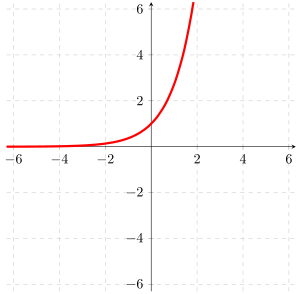
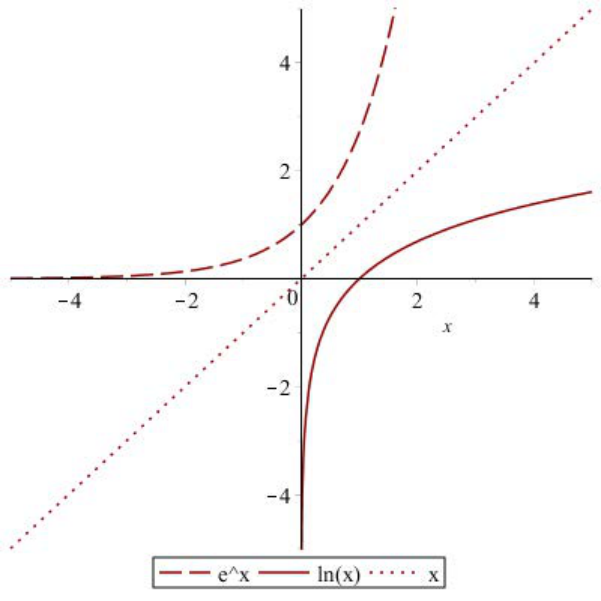
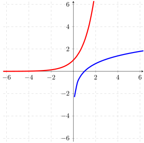

- (a)
- Find the domain and range of \(g\).
- (b)
- Find the values of \(g(1), g(0), g(-1)\) and plot the points \((1,g(1)), (0,g(0)),\) and \((-1,g(-1))\) on the graph of \(g(x)=e^x\).
- (c)
- Graph \(h(x)=\ln (x)\) on the same axis as \(g(x)=e^x\). Recall: \(\ln (x)\) is the inverse of \(e^x\). To find the graph of \(\ln (x)\) we reflect the graph of \(e^x\) over the line \(y=x\). Since the points \(\left (-1,\frac {1}{e}\right ),(0,1),(1,e)\) are on \(y=e^x=g(x)\), the points \(\left (\frac {1}{e}, -1\right ),(1,0),(e,1)\) are on the graph of \(y=\ln (x)=g^{-1}(x)=h(x)\)


- (d)
- Find the domain and range of \(h\).
- (e)
- Find the values of \(h(1), h(0), h(-1), h(e), h\left (\frac {1}{e}\right )\), or say \(x\) not in the domain. \(h(1)=\ln (1)=0\), \(h(0)\) is not defined because \(0\) is not in the domain of \(\ln (x)\). \( h(-1)\) is not defined because \(-1\) is not in the domain of \(\ln (x)\). \(h(e)=\ln (e)=1\), and \(h\left (\frac {1}{e}\right )=\ln \left (\frac {1}{e}\right )=\ln \left (e^{-1}\right )= -1\ln (e)=-1\). These are standard values of the famous function \(h(x)=\ln (x)\) that you should know.